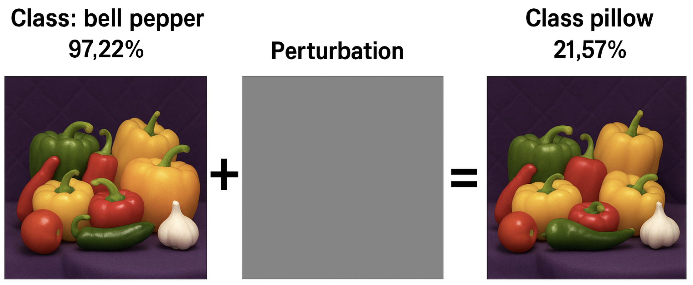
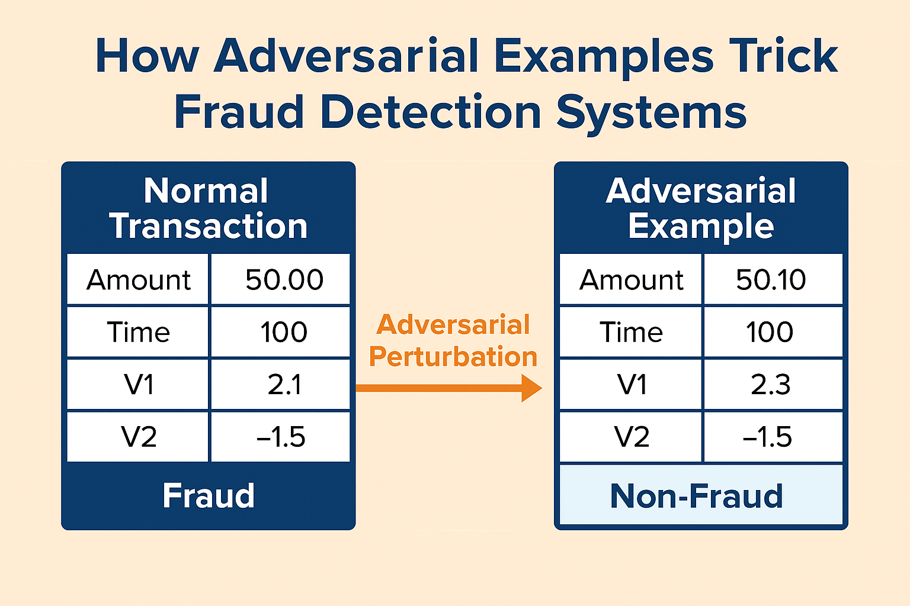
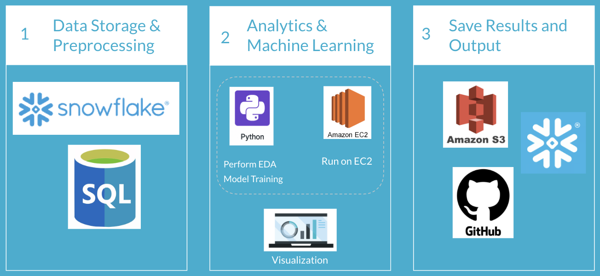
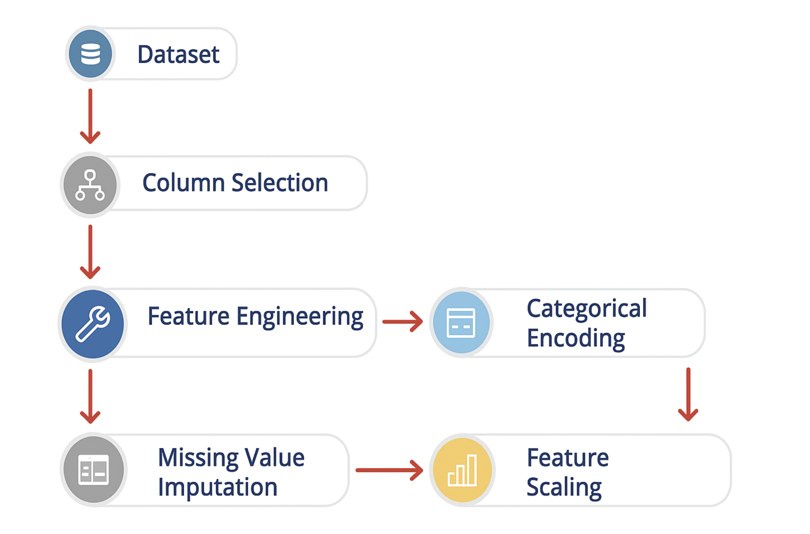
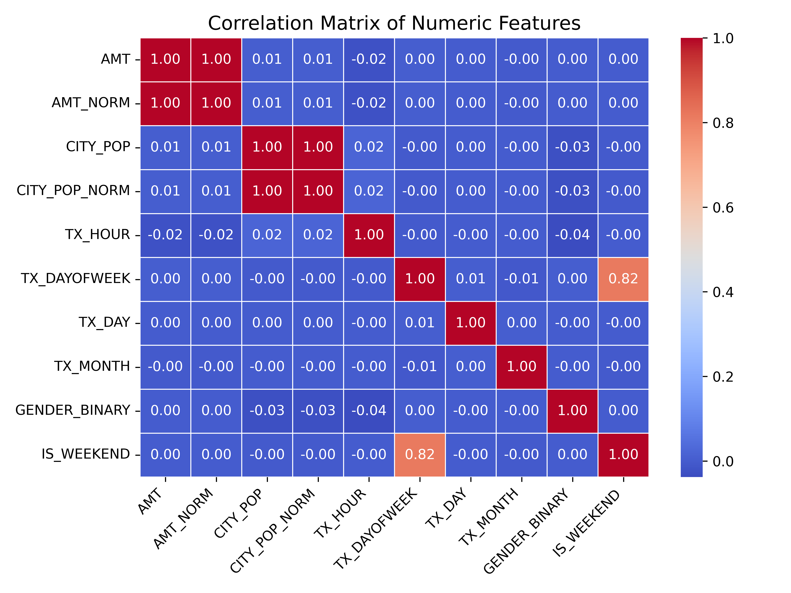
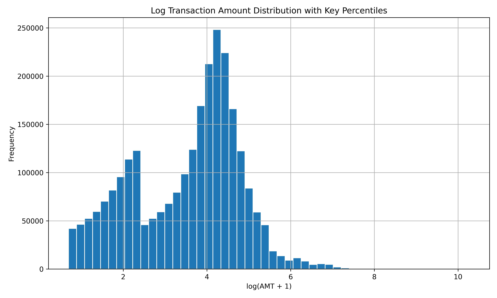
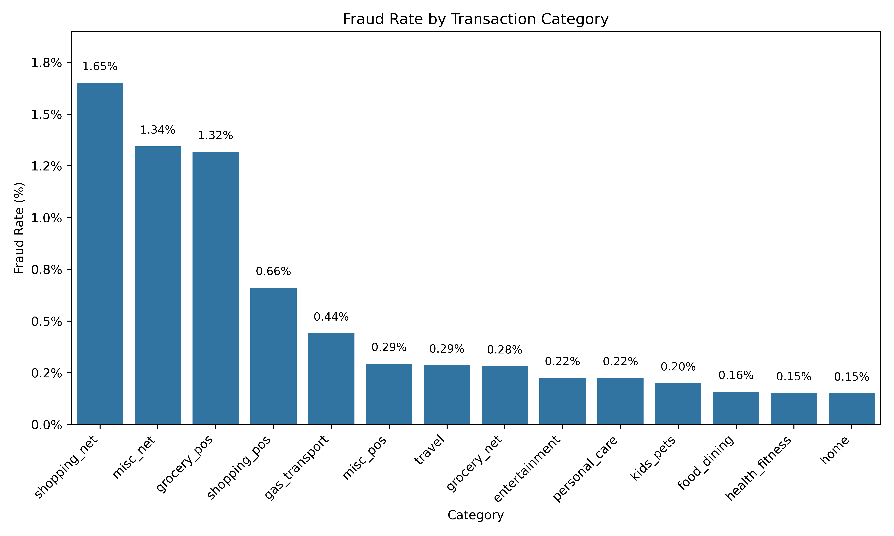
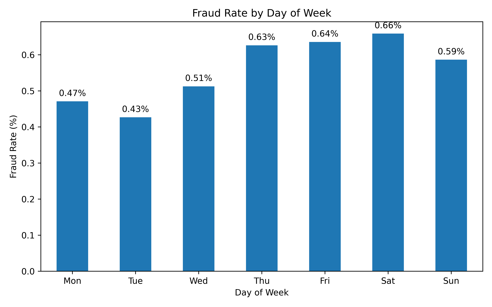
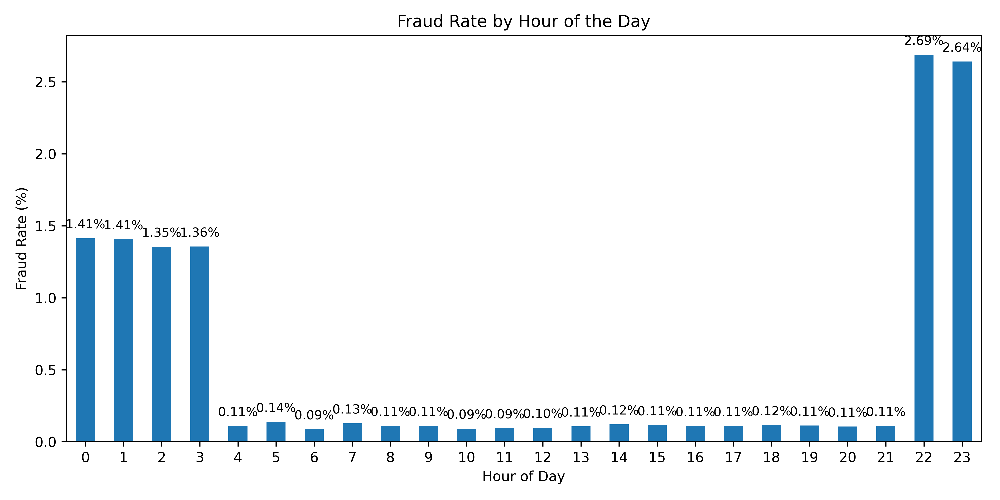
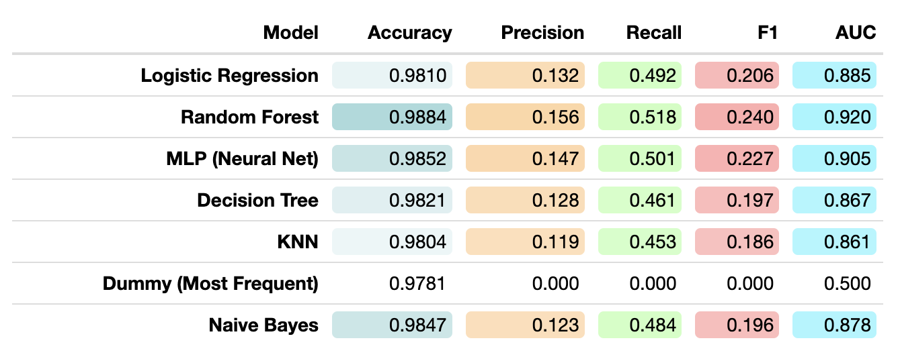

Credit card fraud, which costs the global economy over $5.1 trillion annually, is more than a technical challenge—it is a policy issue with far-reaching consequences.
Fraud affects not only private financial institutions but also the integrity and inclusiveness of the broader financial system.
High fraud rates drive up the cost of financial services, disproportionately affecting low-income and vulnerable populations who may already face barriers to banking access.
Effective fraud detection isn’t just about better algorithms—it’s about creating regulatory environments that incentivize transparency,
safeguard user data, and foster the development of resilient AI systems that can adapt to adversarial behavior.
In this light, addressing credit card fraud is central to ensuring trust, equity, and security in digital finance.
Global and Social Impact of Credit Card Fraud
Most adversarial research focuses on images. This example shows how to train a neural network that is robust to adversarial examples using fast gradient sign method (FGSM) adversarial training.
Neural networks can be susceptible to a phenomenon known as adversarial examples, where very small changes to an input can cause it to be misclassified. These changes are often imperceptible to humans.
But in finance, tabular data is trickier and more realistic for policy applications.
Recent research (Agarwal & Ratha, 2021) showed that even simple black-box attacks can fool models trained to detect fraud.

Adversarial Example in Image Classification
We simulate adversarial attacks on tabular financial data to test and improve the robustness of fraud detection models.
By identifying vulnerabilities that lead to false negatives, our work supports the development of more secure and adaptive AI systems for real-world deployment in financial services.

Simulating Adversarial Attacks on Tabular Data
Workflow

Step 1: Data Storage & Preprocessing 🧊
Raw transaction data is stored in Snowflake and cleaned using SQL. This prepares a structured foundation for analysis.
Step 2: Analytics & Machine Learning 🧠
We perform EDA and model training in Python using Amazon EC2. Visualization tools help explore data trends and model performance.
Step 3: Save Results & Output 📦
Final predictions and models are saved to Amazon S3, written back to Snowflake, and shared through GitHub for reproducibility.
We use the Credit Card Transactions Fraud Detection Dataset by Kartik Shenoy. This synthetic dataset was generated using Sparkov, a simulation tool that mirrors real-world credit card transaction behavior while preserving user privacy.
Why This Dataset?
Simulates realistic transaction behavior with time and amount variation
Includes both legitimate and fraudulent records for robust modeling
Categorical Encoding: Use LabelEncoder on CATEGORY, MERCHANT, JOB, STATE, fitted on combined train + test.
Missing Value Imputation: Fill numeric columns with mean, categorical with most frequent value.
Feature Scaling: Standardize numerical features using StandardScaler.

We conducted exploratory data analysis (EDA) to understand key trends and patterns in the data. The visualizations below illustrate transaction behavior and fraud characteristics across various dimensions.

Correlation Matrix

Log-Transformed Transaction Amount

Fraud Rate by Category

Fraud Rate by Day of the Week

Fraud Rate by Hour of the Day
Modelling

Model Evaluation Summary
✅ Random Forest is the best choice for your fraud detection use case, especially where recall and AUC are crucial (e.g., catching fraudulent cases without too many false negatives)
💡 MLP is competitive and could be explored further with additional hyperparameter tuning or adversarial training
⚠️ Avoid KNN and Dummy classifiers, as they offer minimal predictive value in this context and are not suitable for production-level fraud detection
Adversarial Modeling: Feature Perturbation
Traditional model evaluations often fail to account for how fraudsters adapt their behavior. To better approximate real-world adversarial tactics, we applied targeted feature perturbations that simulate subtle manipulation of transaction characteristics:
amt: Increased transaction amount by 10%
hour: Shifted transaction time by 3 hours
distance_from_home: Reduced to appear closer to the user's location
After perturbation, model behavior varied significantly:
✅ Random Forest showed strong robustness, with fraud recall dropping slightly from 0.6275 to 0.5660 and F1-score from 0.7461 to 0.6983.
✅ MLP remained stable, with a minor increase in fraud recall (0.5674 → 0.5795) and only a slight F1 decrease (0.6268 → 0.6060).
⚠️ Logistic Regression had high recall but extremely low precision, resulting in poor F1-score overall (0.1359 → 0.1276).
⚠️ Decision Tree performance declined significantly, with F1 dropping from 0.6719 to 0.5396.
⚠️ Naive Bayes showed minimal change in recall but a slight drop in F1-score, confirming its generally weak fraud detection capability.
❌ KNN performed the worst, with extremely low fraud recall (0.0191 → 0.0247) and negligible F1 improvement (0.0330 → 0.0420), indicating poor sensitivity to fraudulent patterns.
These results underscore the need for robustness testing in fraud model validation. Evaluating models under adversarial conditions helps ensure that high-performance metrics hold up even when fraudsters attempt to evade detection.
Net change in recall and F1 score after adversarial feature perturbation
Recall Comparison: Clean vs. Perturbed
F1 Score Comparison: Clean vs. Perturbed
Radar Chart: All Models Across All Metrics
Implications and Recommendations
⚠️ Rare Fraud Detection
<<<<<<< HEAD
We introduced adversarial noise (ε = 1.1) using to test model stability.
=======
Models like MLP and Random Forest perform well on rare fraud cases — far better than accuracy-focused methods.
>>>>>>> master
Use recall and F1-score to capture minority-class fraud.
<<<<<<< HEAD
=======
🧪 Stress Testing Models
We applied feature perturbations to mimic real-world fraud strategies.
This revealed weaknesses hidden in clean test results — Decision Trees failed under minor changes.